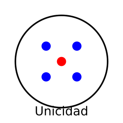
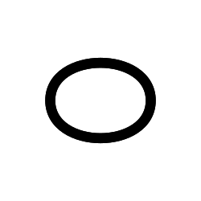
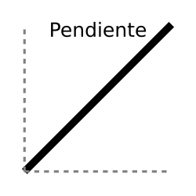
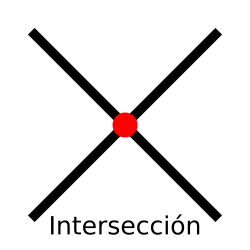

GEO ANALITICA
Explorando la geometría analítica.
La geometría analítica combina álgebra y geometría para resolver problemas en el plano cartesiano. Su aplicación es clave en ingeniería, física y diseño gráfico. Esta página ofrece recursos interactivos que facilitan su comprensión mediante gráficos dinámicos, calculadoras y simuladores. Más que un repositorio de información, busca ser una herramienta educativa intuitiva, conectando la teoría con ejemplos prácticos y aplicaciones en el mundo real.
Propiedades de la recta
Unicidad
Por dos puntos distintos pasa una única recta. Esto significa que no es posible trazar más de una línea recta que pase exactamente por esos dos puntos.
Infinidad
Una recta se extiende indefinidamente en ambas direcciones sin un principio ni un final. No tiene límites ni extremos, a diferencia de los segmentos o los rayos.
Pendiente
La pendiente (\( m \)) de una recta mide su inclinación con respecto al eje \( x \). Si la pendiente es positiva, la recta asciende de izquierda a derecha; si es negativa, desciende. Si la pendiente es cero, la recta es completamente horizontal, y si es indefinida (cuando la recta es vertical), no se puede expresar con un valor numérico.
Interseccion
4. Dos rectas pueden tener diferentes relaciones según su orientación: - *Paralelas*: Nunca se cruzan y tienen la misma pendiente. - *Coincidentes*: Son exactamente la misma recta, es decir, todos sus puntos son comunes. - *Secantes*: Se cruzan en un único punto, lo que significa que tienen pendientes diferentes. Si son perpendiculares, se intersectan formando un ángulo de 90°.
"Descubre un mundo de conocimiento y curiosidad en La Laguna Web, donde cada lectura te acerca a nuevas ideas y perspectivas. ¡Explora, aprende y sumérgete en la información que te inspira!"
Star